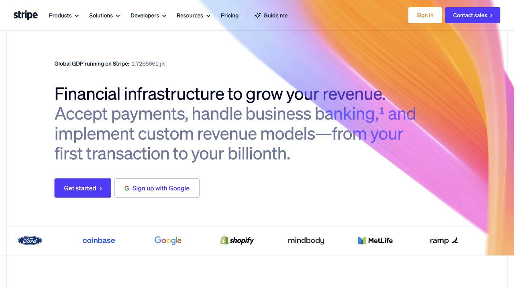01 / 产品与商业介绍明亮、秩序感Stripe用大段价值陈述和清晰的主次行动，组织多彩的商业首屏。阅读分析 ↗实测样式 ↗适合什么时候用适合商业服务与技术平台介绍。先有明确价值和真实证明，再考虑渐变；不适合把长首屏搬进密集操作页。
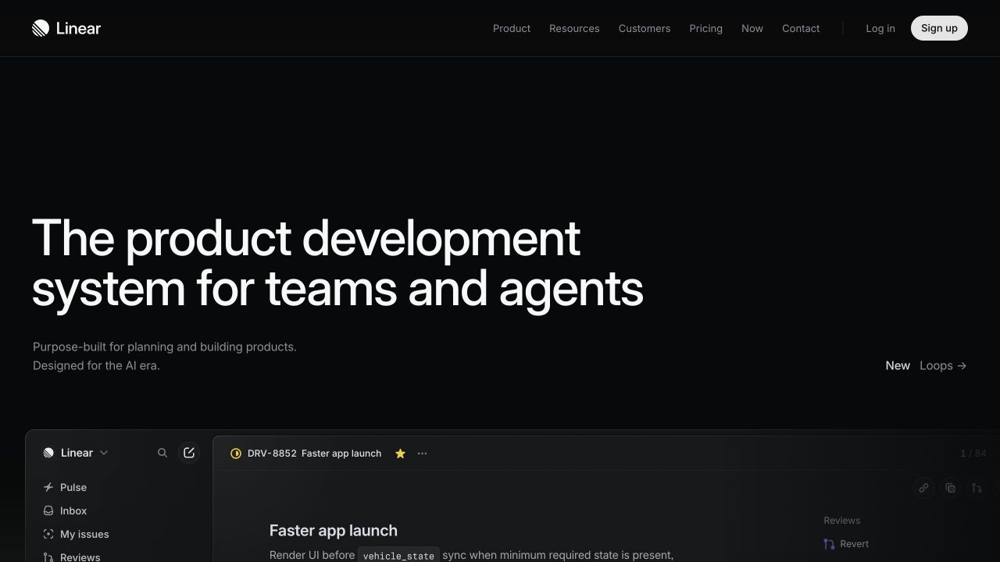02 / 产品与商业介绍暗色、收敛Linear以明度、留白和产品细节建立层级，让工作界面本身成为证据。阅读分析 ↗实测样式 ↗适合什么时候用适合有产品可展示的工具型品牌。低对比不等于低可读性，营销预览也不是完整的后台操作规范。
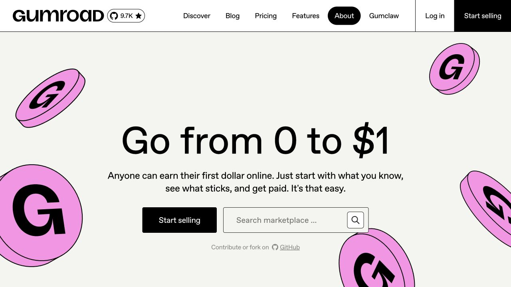03 / 创作与社区活泼Gumroad简短承诺放在中心，装饰留在边缘，行动醒目而明确。阅读分析 ↗实测样式 ↗适合什么时候用适合创作者、数字产品和轻量业务。可替换成自己的插画；粉色硬币和原品牌字标不是可复用素材。
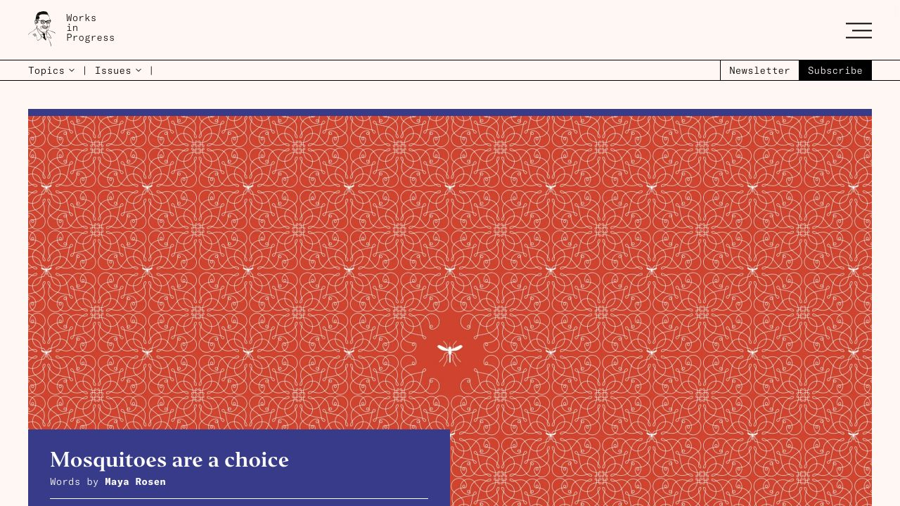04 / 阅读与文档编辑感、温暖Works in Progress以标题、元信息和细线构成阅读秩序，让主稿与其他内容有分别。阅读分析 ↗实测样式 ↗适合什么时候用适合研究笔记、文章合集与专题出版。缺少插画时仍可借鉴编辑层级；移动菜单已观察开合，未做完整可访问性审计。
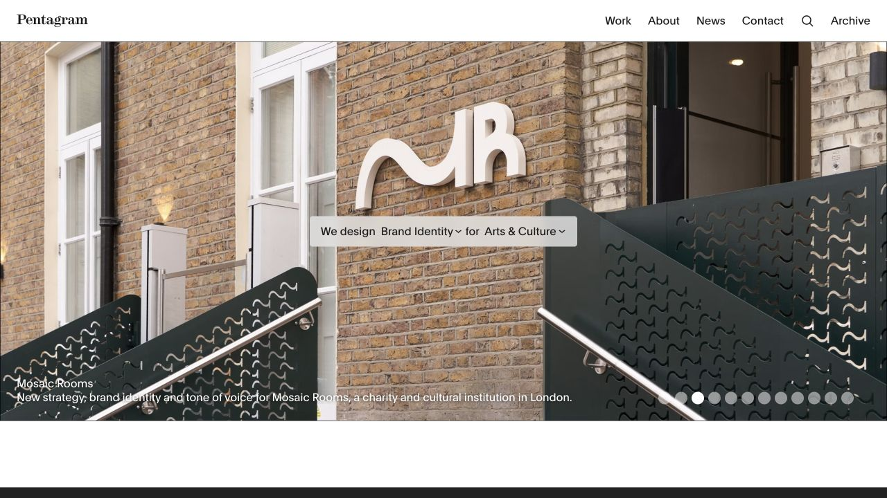05 / 作品展示图像优先、克制Pentagram让作品决定画面，让导航和说明保持安静。优秀的图片是这个方向的前提。阅读分析 ↗实测样式 ↗适合什么时候用适合设计、摄影、建筑作品集。项目少时可以用静态主图，不必复制自动轮播；图上文字必须检查对比。
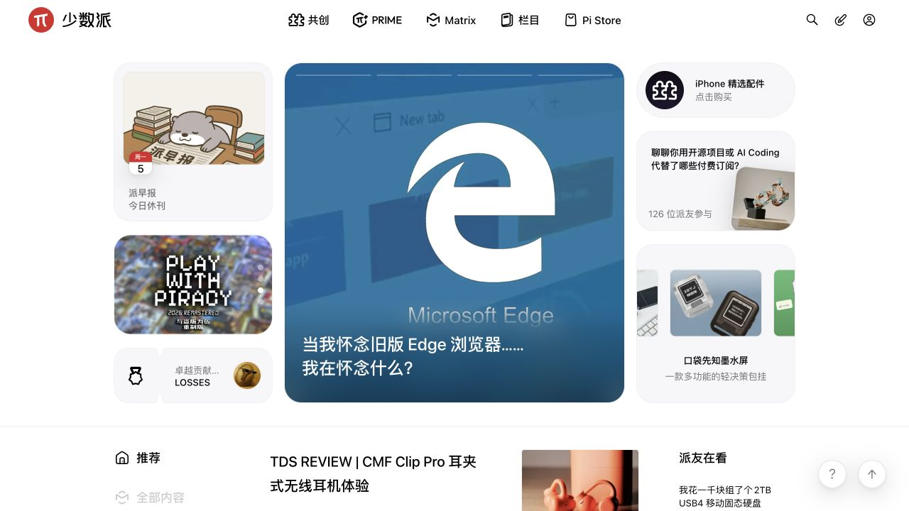06 / 阅读与文档编辑感、清爽少数派桌面首屏把一篇主稿放大，旁边安排较小的文章卡；窄屏改成顺序阅读。阅读分析 ↗实测样式 ↗适合什么时候用中文文章首页、资讯聚合、专题导读；需要大量表格操作或极少内容的工具页。
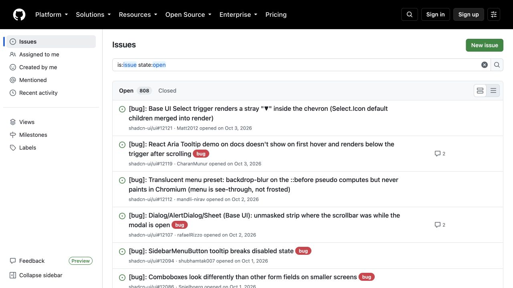07 / 工具与数据实用GitHub Issues桌面版有全局导航、局部侧栏、搜索/状态筛选和密集问题行；窄屏收起侧栏，列表成为主轴。阅读分析 ↗实测样式 ↗适合什么时候用工单、问题追踪、审批和运营列表；只需展示品牌故事的营销页。
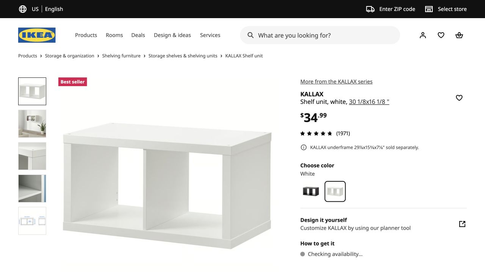08 / 商品与商店务实IKEA桌面左侧为产品图，右侧为价格、规格和购买/履约信息；手机先看大图，再往下阅读购买信息。阅读分析 ↗实测样式 ↗适合什么时候用电商商品详情、规格选择、履约说明；没有真实商品照片或无法提供价格/库存信息的页面。
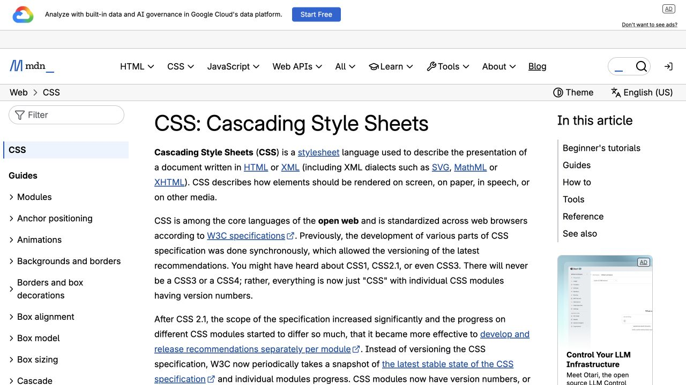09 / 阅读与文档实用MDN CSS 文档桌面显示左侧目录、文章正文和右侧页内导航；窄屏先保留正文，导航压缩。阅读分析 ↗实测样式 ↗适合什么时候用开发者文档、帮助中心、长篇知识库；短促营销首页或不需要目录的单页介绍。
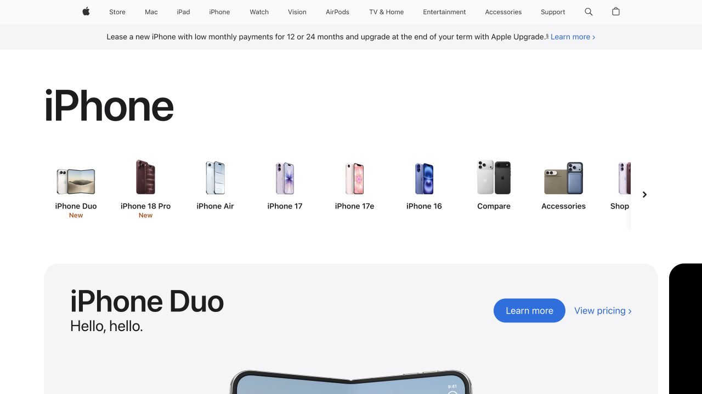10 / 产品与商业介绍克制、精致Apple iPhone桌面以巨大 “iPhone” 标题和横向机型导航开场，随后进入产品画面；窄屏标题缩小，机型入口可横向浏览。阅读分析 ↗实测样式 ↗适合什么时候用高质量实物产品线、品牌产品目录；无产品图或需要在首屏展示大量规格的后台页面。
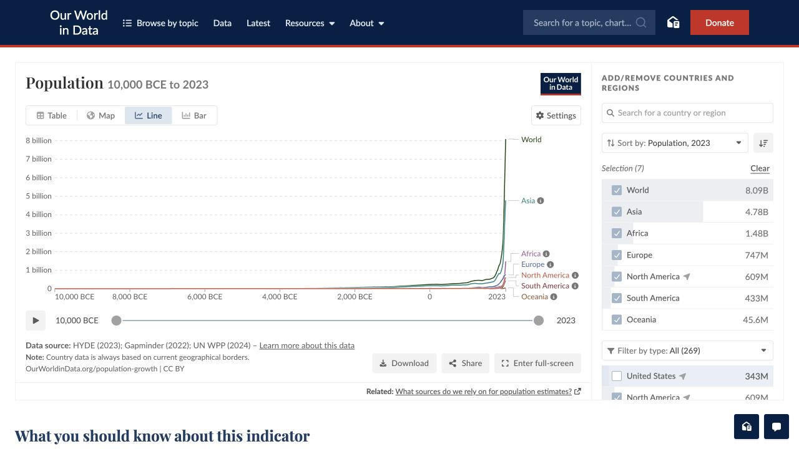11 / 工具与数据理性Our World in Data深蓝站点页眉之下，桌面让主图表与地区选择并列；窄屏把图表放满宽度，地区选择收进按钮。阅读分析 ↗实测样式 ↗适合什么时候用数据探索、指标专题、研究报告交互图；没有可信数据来源或需要遮蔽不确定性的营销图表。
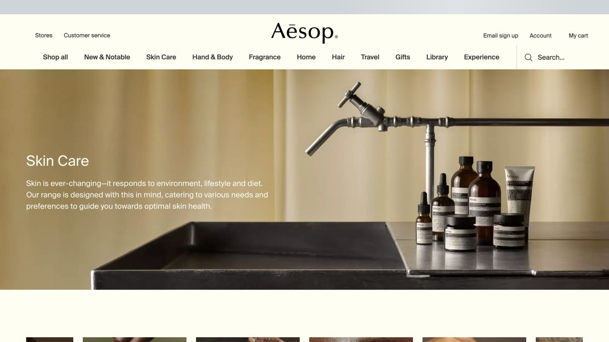12 / 商品与商店温暖、收敛Aesop Skin Care桌面大幅棕米色照片承托标题和说明；手机先呈现影像，再让文字与分类入口独立成块。阅读分析 ↗实测样式 ↗适合什么时候用有高质量影像的护肤、生活方式产品分类；缺少合适影像却只复制米色与留白的电商页。
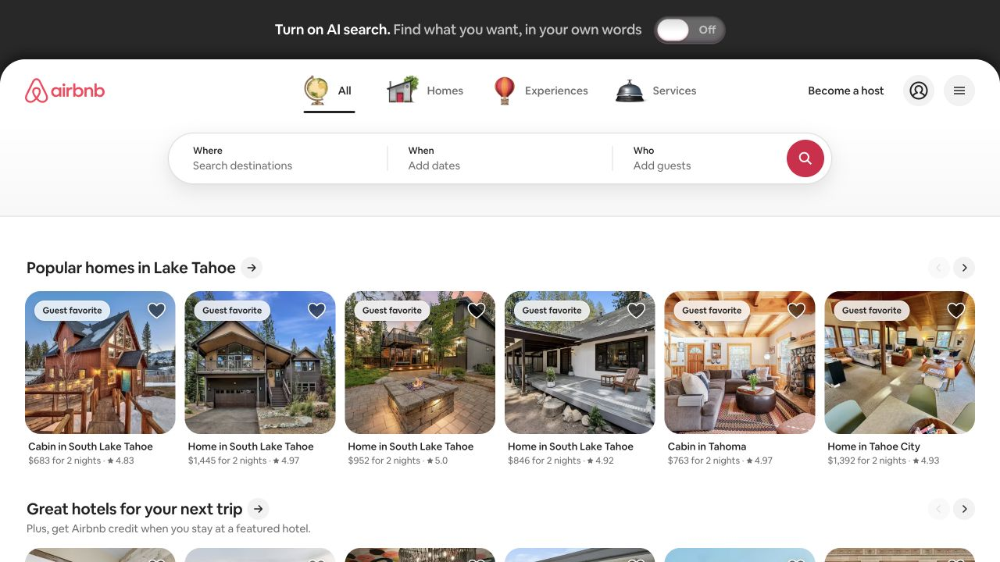13 / 搜索与发现务实Airbnb桌面将搜索和分类入口置于上方，下面是横向房源组；手机把搜索收成大圆角入口、房源卡变成两列并保留底部导航。阅读分析 ↗实测样式 ↗适合什么时候用旅行、房源或多条件服务发现页；没有可靠库存、地点或图片数据的展示站。
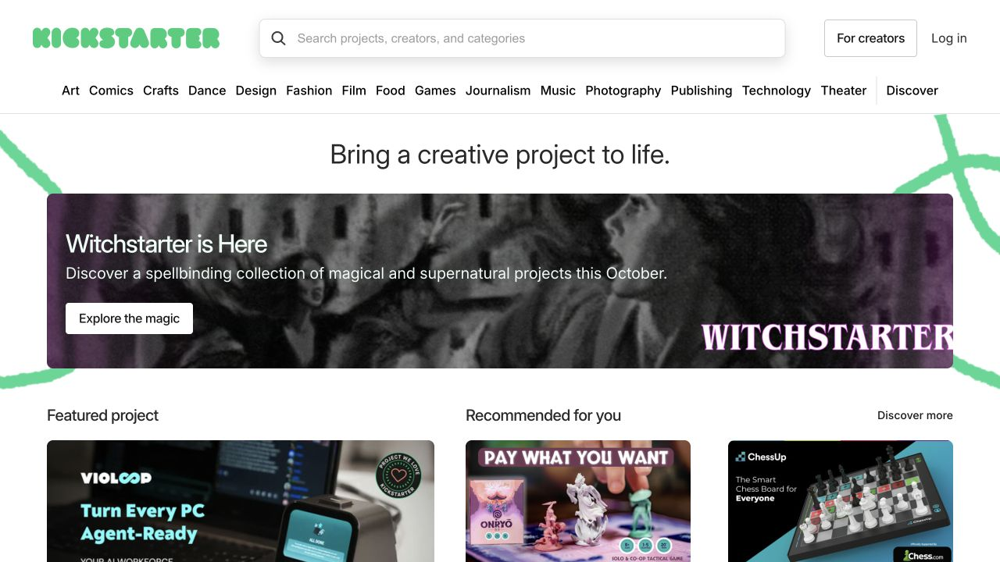14 / 创作与社区编辑感Kickstarter绿色品牌导航之后是简洁使命语、当期专题横幅和精选项目卡；窄屏顺序堆叠。阅读分析 ↗实测样式 ↗适合什么时候用创意项目发现、作品众筹、专题活动入口；没有项目故事、进度或可信封面的空卡片墙。
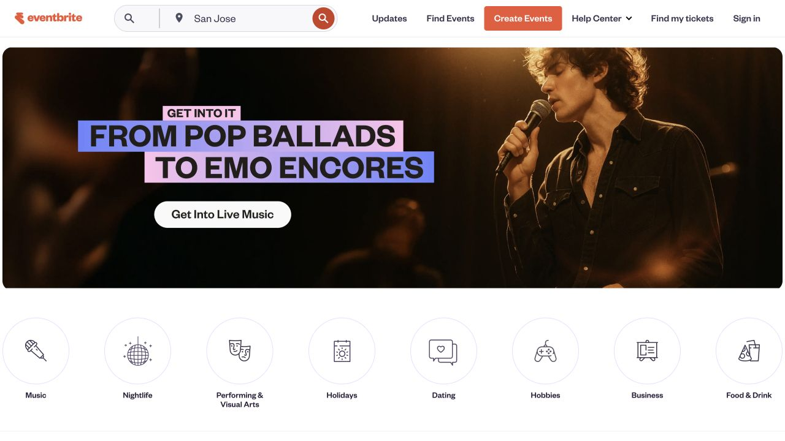15 / 搜索与发现活跃Eventbrite搜索与地点入口之后是活动推广横幅、圆形类别入口和时间筛选；手机进一步压缩顶部入口。阅读分析 ↗实测样式 ↗适合什么时候用本地活动、讲座、展览与票务探索；活动很少却复制复杂筛选和分类结构。
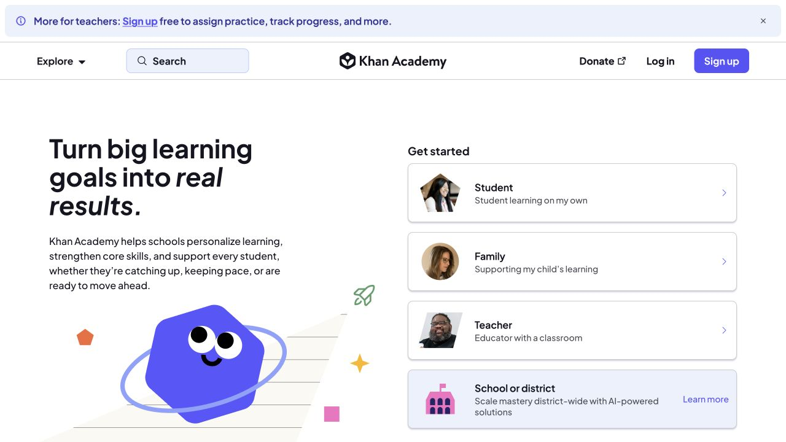16 / 教育与健康服务友好Khan Academy大标题与蓝紫插画说明学习目标，随后通过身份卡片分流；手机改为上下排列。阅读分析 ↗实测样式 ↗适合什么时候用面向学生、家长、教师等不同人群的服务；用户目标单一却设置多余身份入口。
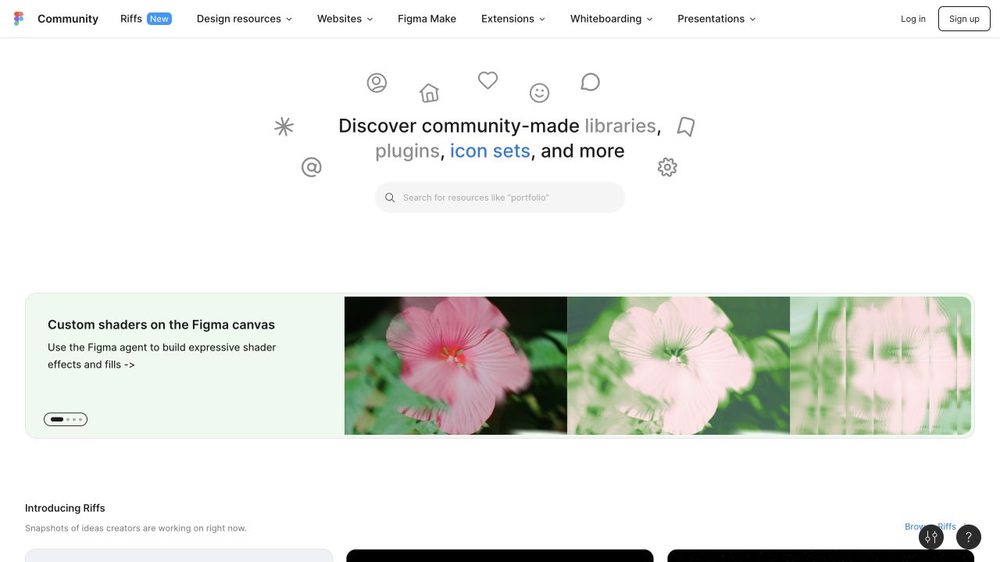17 / 创作与社区中性Figma Community中性背景与居中搜索句引导查找，下面是精选资源横幅和卡片；手机收缩导航并垂直浏览。阅读分析 ↗实测样式 ↗适合什么时候用插件、模板、设计资源、素材社区；资源数量不足却复制大型市场入口。
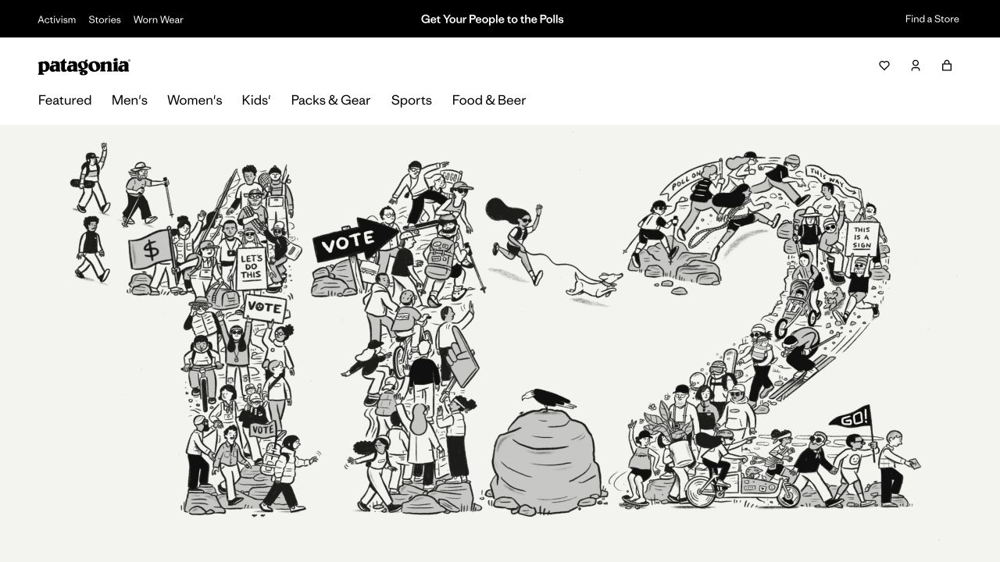18 / 品牌与议题鲜明Patagonia黑色导航下以大幅原创活动图和极大的标题作为首屏，手机改成较紧凑的单列叙事。阅读分析 ↗实测样式 ↗适合什么时候用具有真实公共议题与明确行动的品牌活动；没有真实行动基础却借用公益叙事或原活动视觉。
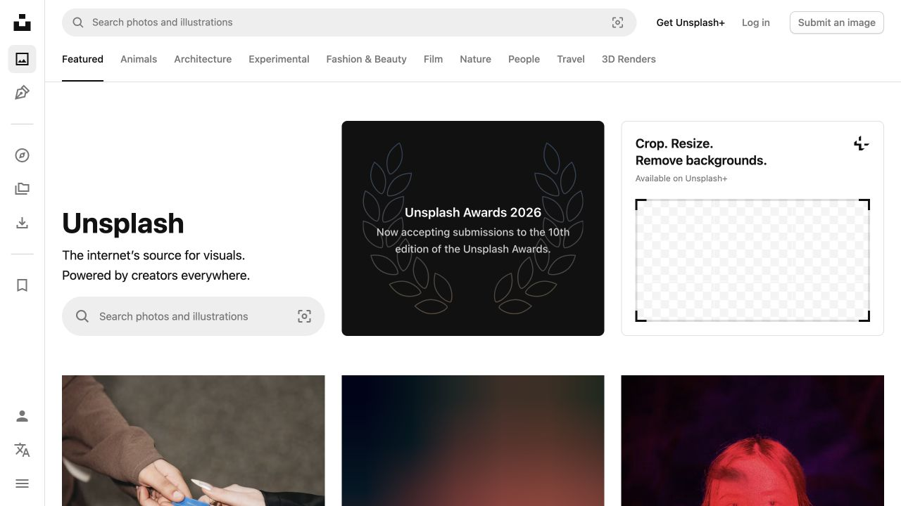19 / 搜索与发现图像优先Unsplash桌面左侧功能栏与顶部分类导航围绕中央搜索和图像网格；窄屏收起功能栏并以内容流为主。阅读分析 ↗实测样式 ↗适合什么时候用摄影库、素材库、图库型作品展示；图片质量参差或没有明确授权信息的站点。
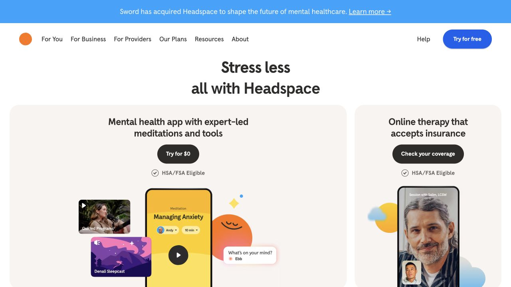20 / 教育与健康服务柔和Headspace大标题之后用暖色大圆角服务卡、插画与产品画面呈现不同入口；手机把卡片顺序堆叠。阅读分析 ↗实测样式 ↗适合什么时候用冥想、健康内容、面向不同服务对象的入口；严肃临床决策或需要高密度数据的工作台。
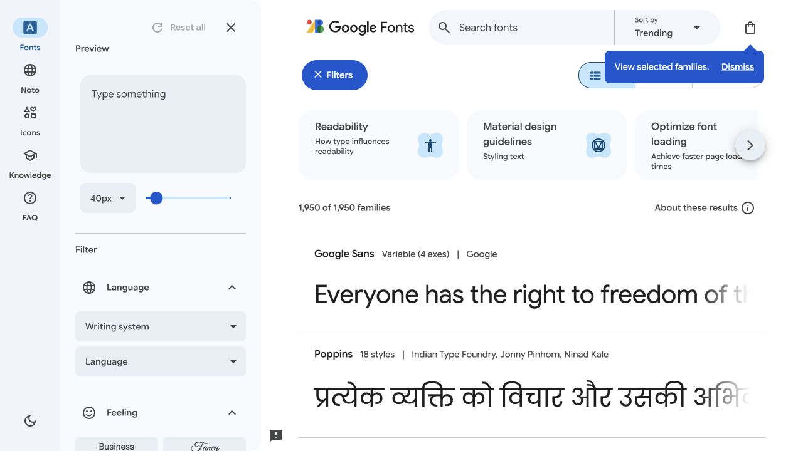21 / 搜索与发现清爽、秩序感Google Fonts · 字体发现侧栏负责筛选，主区域用真实字样直接比较字体，窄屏将筛选收进抽屉。阅读分析 ↗实测样式 ↗适合什么时候用适合字体、图标等可直接预览的资源库；不适合只有几项资源的小页面。
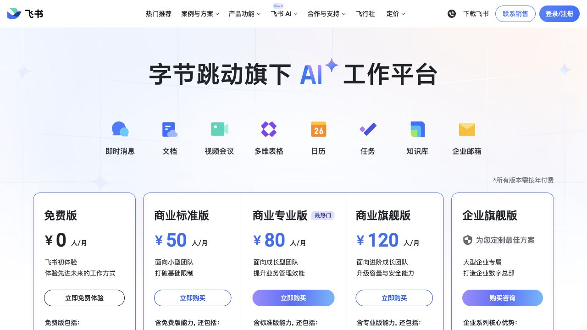22 / 定价比较秩序感、务实飞书 · 中文定价比较多档套餐共用价格和行动按钮基线，用推荐档强调及展开比较表辅助选择。阅读分析 ↗实测样式 ↗适合什么时候用适合有明确档位与可比较功能的中文 SaaS；不适合无法解释档位差异的服务。
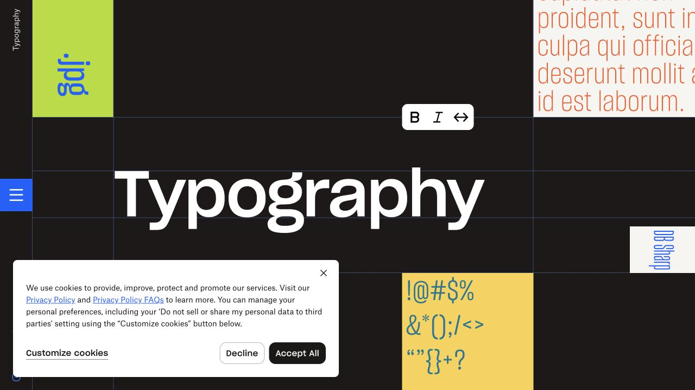23 / 品牌与议题鲜明、活泼Dropbox Brand · 交互字样把品牌字体做成可操作的展品，巨幅字样与彩色样本分布在深色网格中。阅读分析 ↗实测样式 ↗适合什么时候用适合字体、品牌手册和视觉实验展示；不适合长文阅读或高频业务操作。
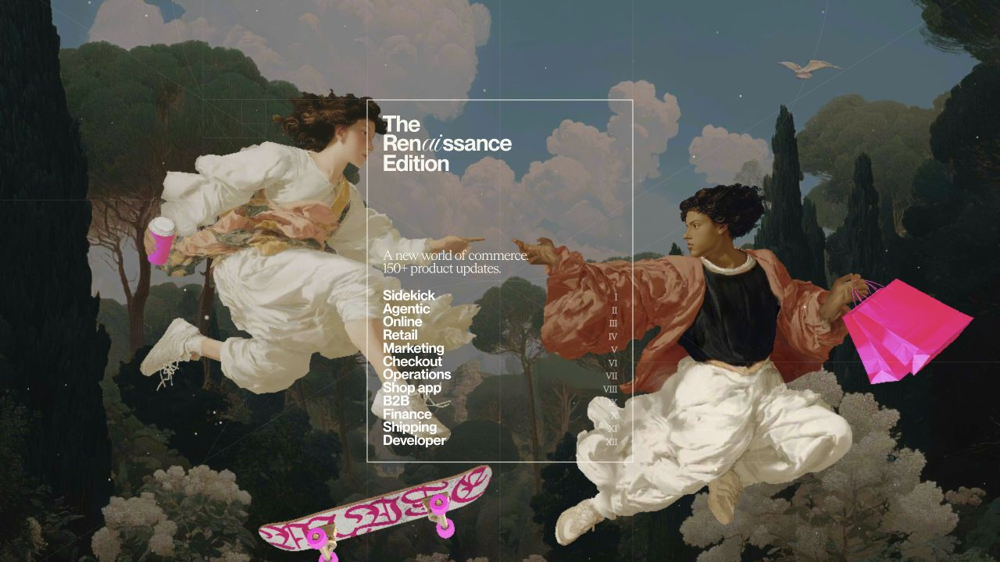24 / 产品与商业介绍编辑感、鲜明Shopify Editions · 主题发布主题插画建立发布季身份，紧凑章节目录把大量产品更新组织为可跳转长页。阅读分析 ↗实测样式 ↗适合什么时候用适合多模块产品发布与年度报告；需要成体系的主题视觉和真实更新内容。
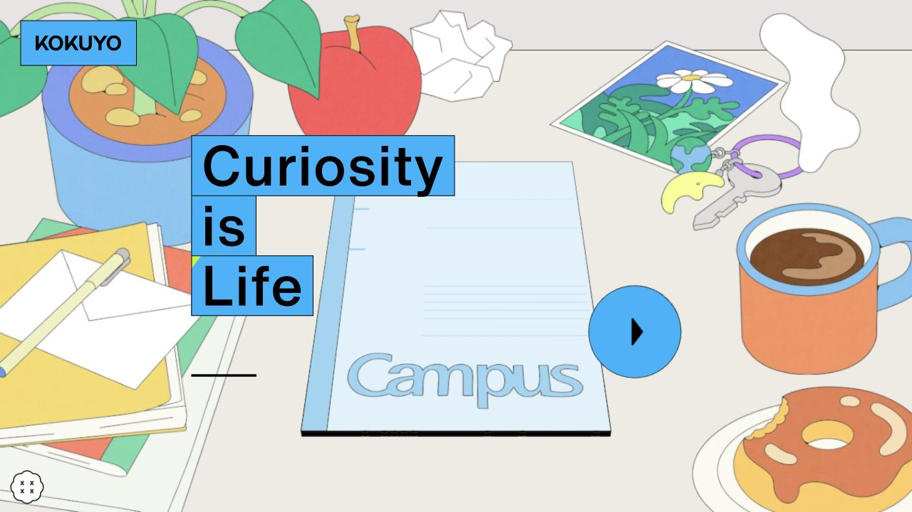25 / 品牌与议题活泼、温暖KOKUYO · 插画叙事以桌面和笔记本构成叙事场景，用单一箭头引导进入品牌故事。阅读分析 ↗实测样式 ↗适合什么时候用适合儿童教育、文化品牌及短篇互动故事；高度依赖原创场景插画。
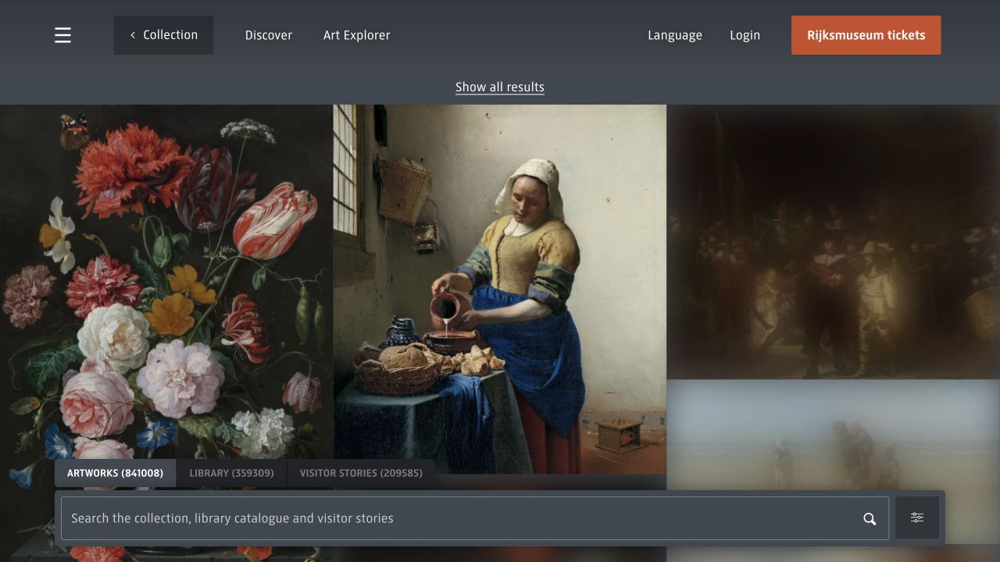26 / 搜索与发现图像优先、编辑感Rijksmuseum · 艺术收藏检索作品铺满浏览区域，搜索与集合切换悬在画面下方，工具退后让内容成为主角。阅读分析 ↗实测样式 ↗适合什么时候用适合美术、摄影和档案收藏；需要高质量作品图和可靠元数据。
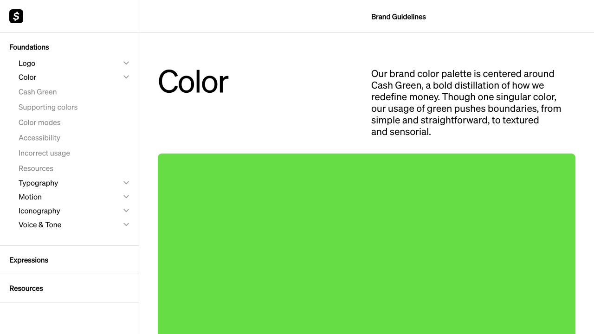27 / 阅读与文档秩序感、鲜明Cash App · 颜色规范固定规范目录配合分栏说明、大色样和应用照片，把品牌规则写成可查阅手册。阅读分析 ↗实测样式 ↗适合什么时候用适合设计系统和品牌规范文档；不需要把品牌绿迁移到其他产品。
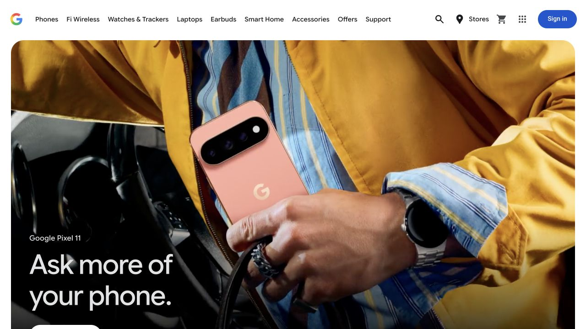28 / 商品与商店清爽、图像优先Google Store · 产品商店生活场景首屏引出产品，随后以统一商品图和独立价格行完成比较。阅读分析 ↗实测样式 ↗适合什么时候用适合少数产品家族的品牌商店；依赖高质量生活摄影及统一商品图。
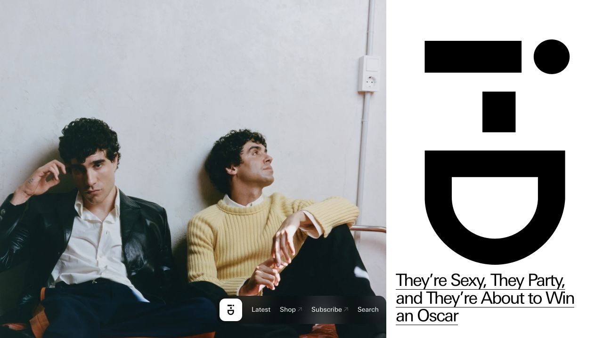29 / 阅读与文档编辑感、鲜明i-D · 时尚杂志大幅人物摄影与夸张刊名字形并列，文章流和快讯流形成不同阅读速度。阅读分析 ↗实测样式 ↗适合什么时候用适合有强摄影与编辑选题的杂志；不适合以检索效率为首要目标的资料站。
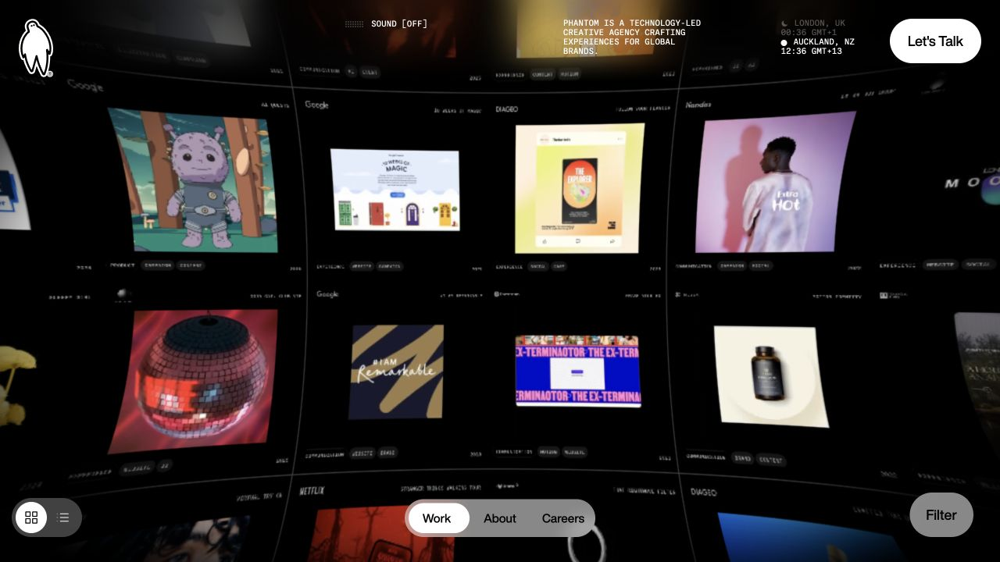30 / 作品展示暗色、鲜明Phantom · 作品墙与目录同一批作品提供沉浸图墙和按年份排列的文字目录，兼顾浏览与快速定位。阅读分析 ↗实测样式 ↗适合什么时候用适合拥有大量项目的创意机构；小作品集或低性能设备应优先保留普通列表。
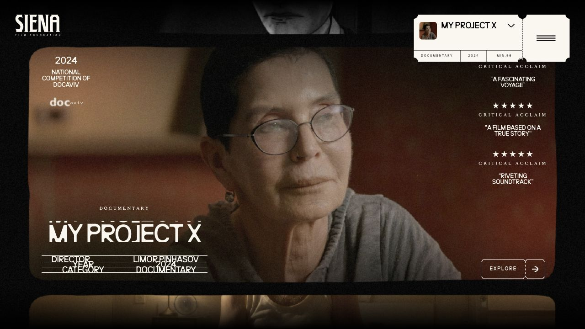31 / 作品展示暗色、图像优先Siena Film · 电影海报式展示影片画面占据主体，票根式导航与演职员信息把网站组织成电影展映空间。阅读分析 ↗实测样式 ↗适合什么时候用适合电影、影像作品及展览；依赖画面质量，不适合密集业务表单。
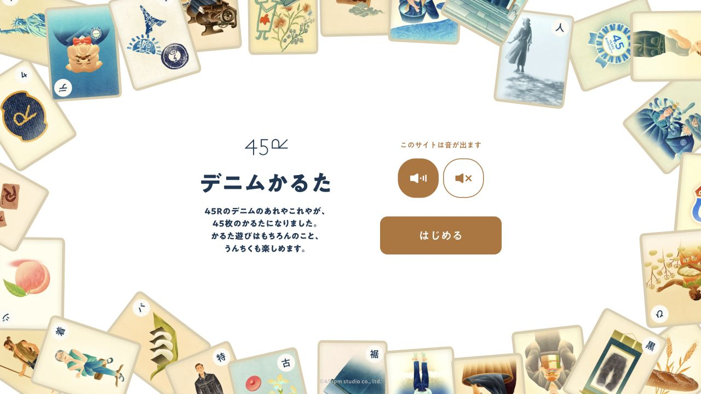32 / 品牌与议题温暖、活泼45R Denim Karuta · 品牌卡牌插画卡牌围出中央留白，把牛仔知识转为可开始、可练习的小型互动体验。阅读分析 ↗实测样式 ↗适合什么时候用适合品牌知识、文化科普与轻量教学；需要成系列插画和可拆分的小知识。
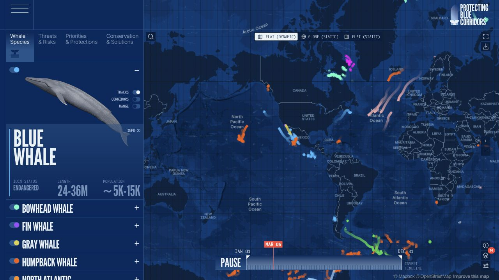33 / 工具与数据理性、暗色WWF Blue Corridors · 地图数据物种目录、迁徙图层和时间轴围绕地图组织，颜色将数据轨迹与对象关联。阅读分析 ↗实测样式 ↗适合什么时候用适合地理数据、生态研究及地图探索；必须有可信数据和可解释图例。
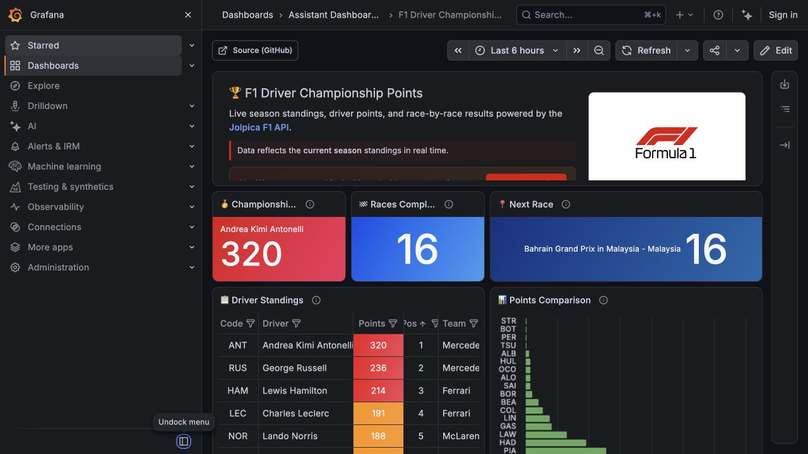34 / 仪表盘理性、暗色Grafana Play · 数据仪表盘统一时间工具条下先放摘要指标，再用表格和图表解释构成与差异。阅读分析 ↗实测样式 ↗适合什么时候用适合监控、运营和统计后台；本例是官方公开沙盒，不代表所有 Grafana 默认布局。
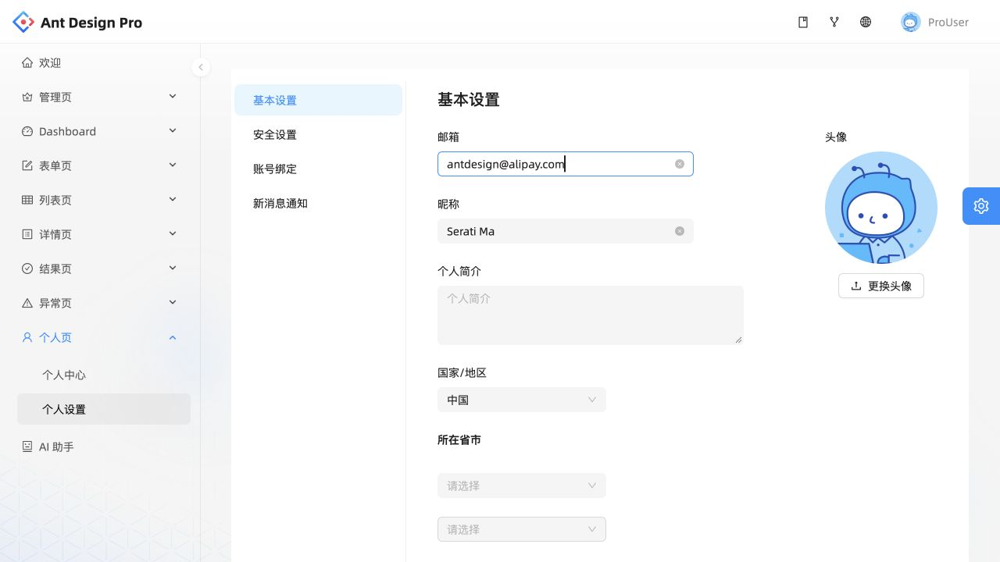35 / 表单与账户务实、秩序感Ant Design Pro · 中文账户设置全局导航、设置分类和编辑区分层，基本信息用表单，安全信息用状态列表。阅读分析 ↗实测样式 ↗适合什么时候用适合中文管理后台及账户设置；这是官方演示数据，不是用户真实账户。
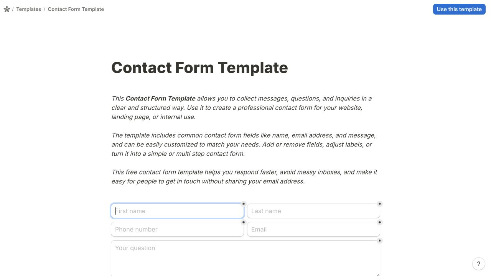36 / 表单与账户克制、清爽Tally · 联系表单模板窄内容列承载说明和字段，桌面双列短字段、窄屏单列，错误紧贴对应输入。阅读分析 ↗实测样式 ↗适合什么时候用适合联系、问询和简短信息收集；本例是模板预览，不是完整客户业务表单。
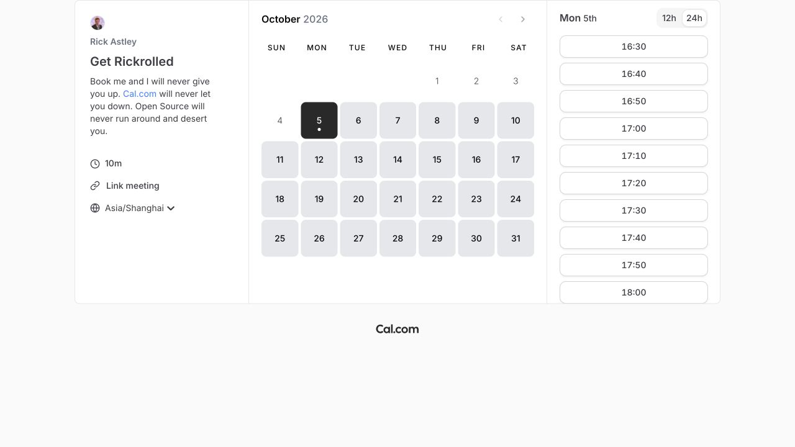37 / 表单与账户中性、秩序感Cal.com · 预约日历示例桌面将活动说明、日期和时段分三栏，选定日期后只更新对应的时段列表。阅读分析 ↗实测样式 ↗适合什么时候用适合咨询、活动和服务预约；需要真实时区、可用日期和时段数据。
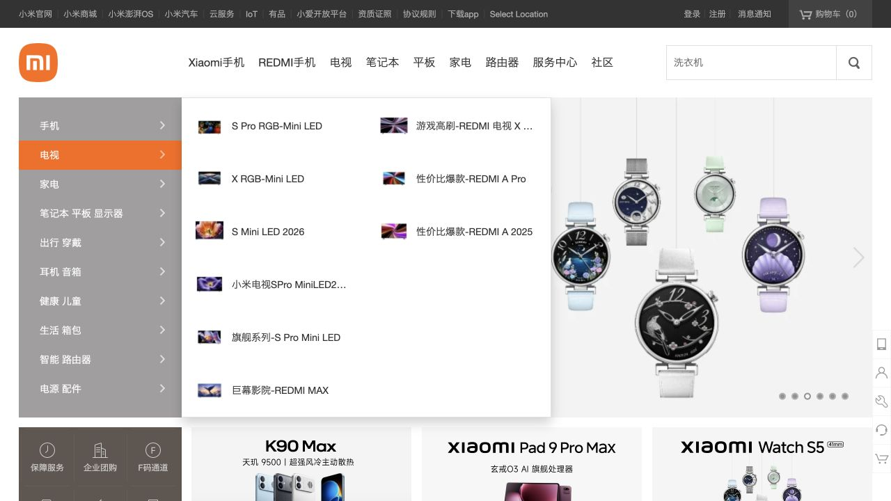38 / 商品与商店务实、秩序感小米商城 · 中文商品目录三级入口和统一商品网格支撑大量品类，橙色集中标记价格与当前分类。阅读分析 ↗实测样式 ↗适合什么时候用适合中文桌面商城和多品类目录；当前窄屏快照存在裁切，不作为移动范本。
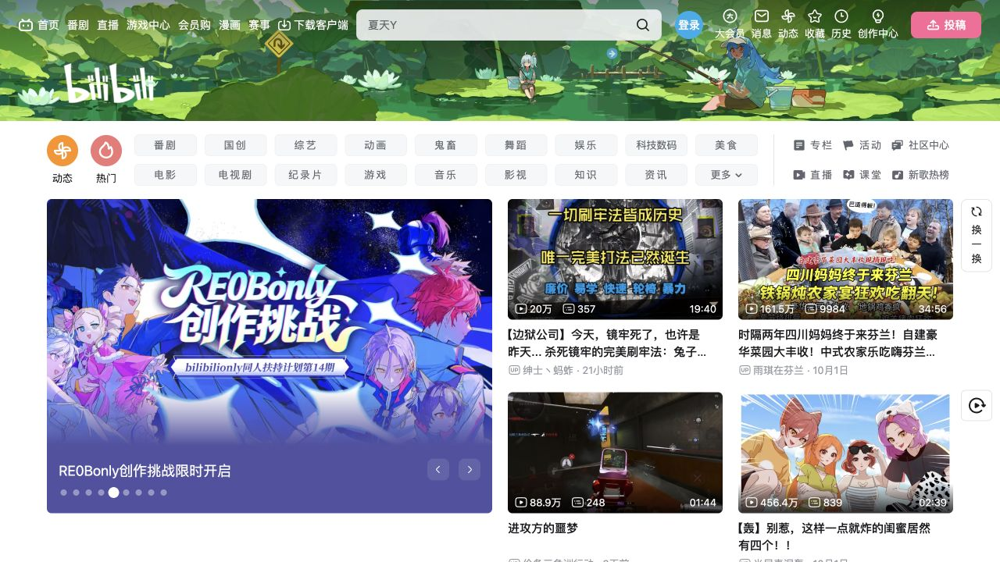39 / 搜索与发现活跃、务实哔哩哔哩 · 中文内容发现分类入口、重点轮播和标准视频卡片并置，用缩略图与短元信息支持快速浏览。阅读分析 ↗实测样式 ↗适合什么时候用适合中文内容社区和视频发现页；应有足够内容，不照搬登录干扰和桌面裁切。
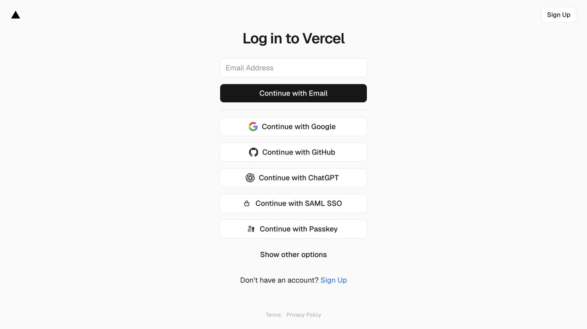40 / 表单与账户克制、中性Vercel · 登录方式选择窄列集中邮箱与第三方登录，主方式用深色按钮，备用方式渐进展开。阅读分析 ↗实测样式 ↗适合什么时候用适合工具产品登录入口；认证方式须由真实业务支持，不可为好看添加假按钮。